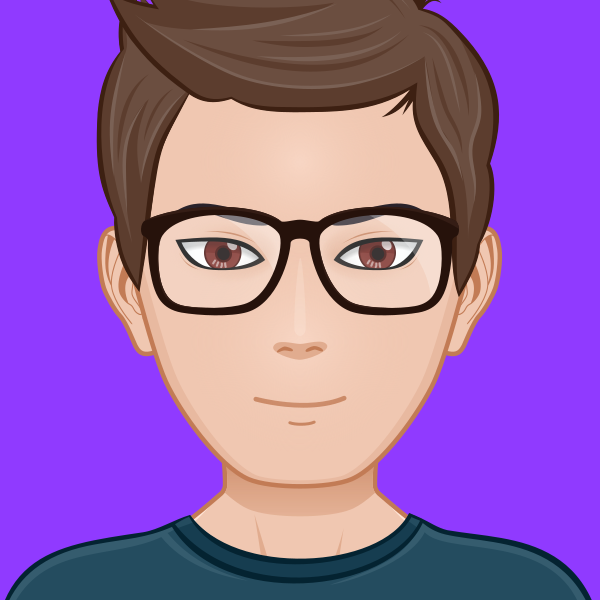
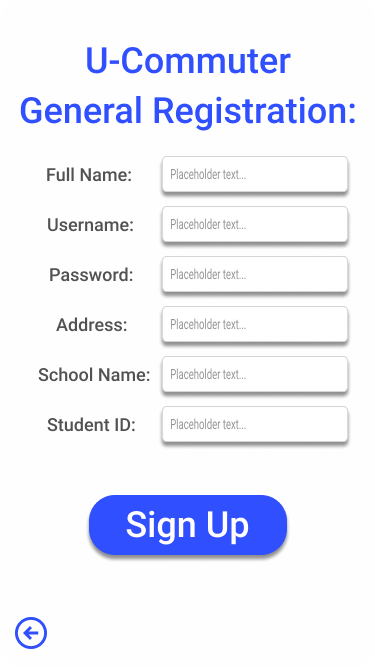
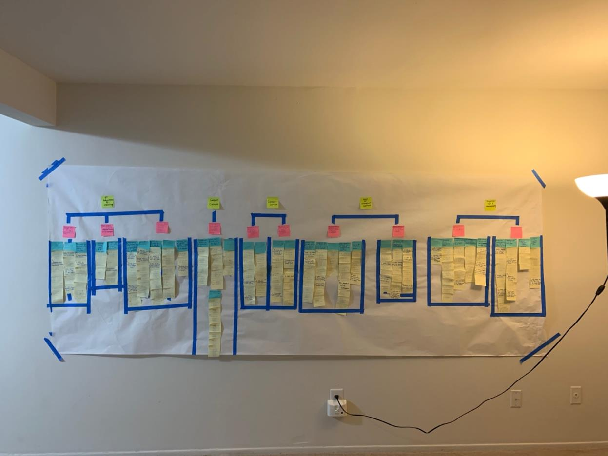

I'm Gordon Nenadovic.
UX/UI Designer & Web Developer
Nice to meet you!
I'm a master's student in the School of Information at the University of Michigan Ann Arbor campus. I study UX/UI design and Front-End Development. I'm hard working, eager to learn, and persistent. Explore my website to see my work! Or take a look at my resume below!
Download ResumeWhat I bring to the table:
Programming:
HTML/CSS
Javascript
SQL
Python
UX/UI Methods:
Wireframes
Paper Prototypes
Surveys
User Interviews
Heuristic Evaluations
Personas
Tools I Use:
Figma
Axure
Adobe XD
My Work:
U-M-Commuter: Interaction Design
U-M-Commuter was my final project for my Interaction Design course at the University of Michigan. It is a basic app to help students commute to college campuses easier by providing them with more information, such as the availability of parking in student lots. It is a simple idea that to help student commuters, and there is no reason that the information should not be available.
The prototype for the app also includes a student rideshare/carpool system to help students save on the cost of an expensive parking pas, reduce emissions, and help students connect. I created the prototype entirely in Figma, and it was my first ever prototype. The complete prototype can be viewed Here
The Michigan Theater: Contextual Inquiry
As part of my Contextual Inquiry class at the University of Michigan I was paired with a group assigned to conduct UX Research on behalf of the University of Michigan, which had requested a group to assist with an internal issue.
My group conducted employee interviews to gather data and then analyzed it using affinity notes that we organized with an affinity wall. Our findings and recommendation were then presented to the Michigan Theater in our collaborative report (available upon request) and a stakeholder presentation.
About Me
I'm a nerd. I started out playing Diablo and Starcraft when I was a small child. Growing up I spent my free time playing WoW, Dungeons and Dragons with my brother and his friends or watching Star Wars or Lord of the Rings for the millionth time.